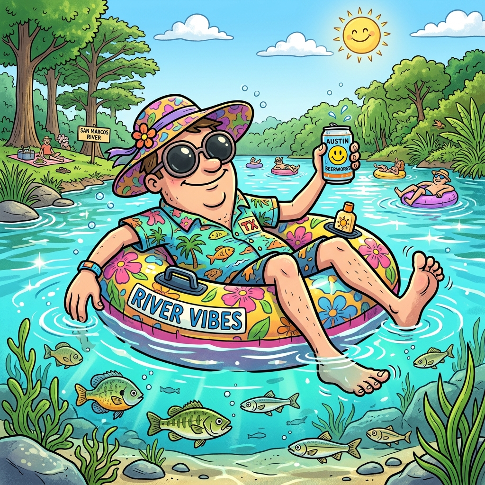
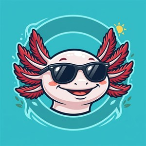

The Current Vibe
Evaluating Conditions...
Fetching streamflow and weather data to calculate river floating conditions.

🌊 Loading Flow
☀️ Loading Weather

Real-Time River & Eco Dashboard • San Marcos, TX
Fetching streamflow and weather data to calculate river floating conditions.

River ecosystem conditions are stable.
Resting on gravel bed. Click to open field guide!
Outstanding work! You have mastered the aquatic flora and fauna of the San Marcos River. Keeping these species protected keeps the river pristine for everyone!
SM River Vibe streams live, non-commercial public radio and 100% commercial-free independent internet broadcasts. Click any link below to visit station homepages, view live playlist tracks, or support the origin broadcasters.

SomaFM is an independent, listener-supported internet radio network based in San Francisco broadcasting over 30 distinct commercial-free channels with no ads, sponsorships, or paywalls. Below are the 6 official SomaFM channels featured on the Riversound stereo deck:
Local non-commercial educational and community radio stations broadcasting right here in the Texas Hill Country corridor: